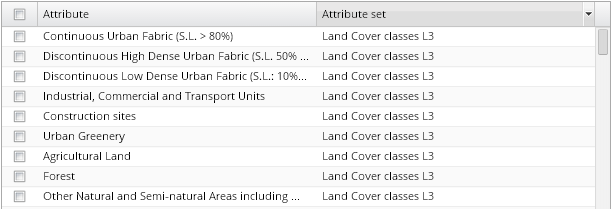
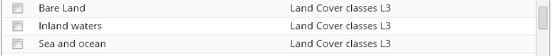

To ensure a better readability of attribute content of the application, attributes are grouped into meaningful attribute sets. These attribute sets are intended not only for thematic adjustment of attributes: they are also usable for filtering attributes when configuring charts or thematic maps. Attribute sets can be sorted in ascending or descending order or filtered as attributes themselves.
An example of a land cover-based attribute set, called Land Cover classes Level3, composed from 12 attributes (representing 12 land cover classes in land cover classification), is provided below:

